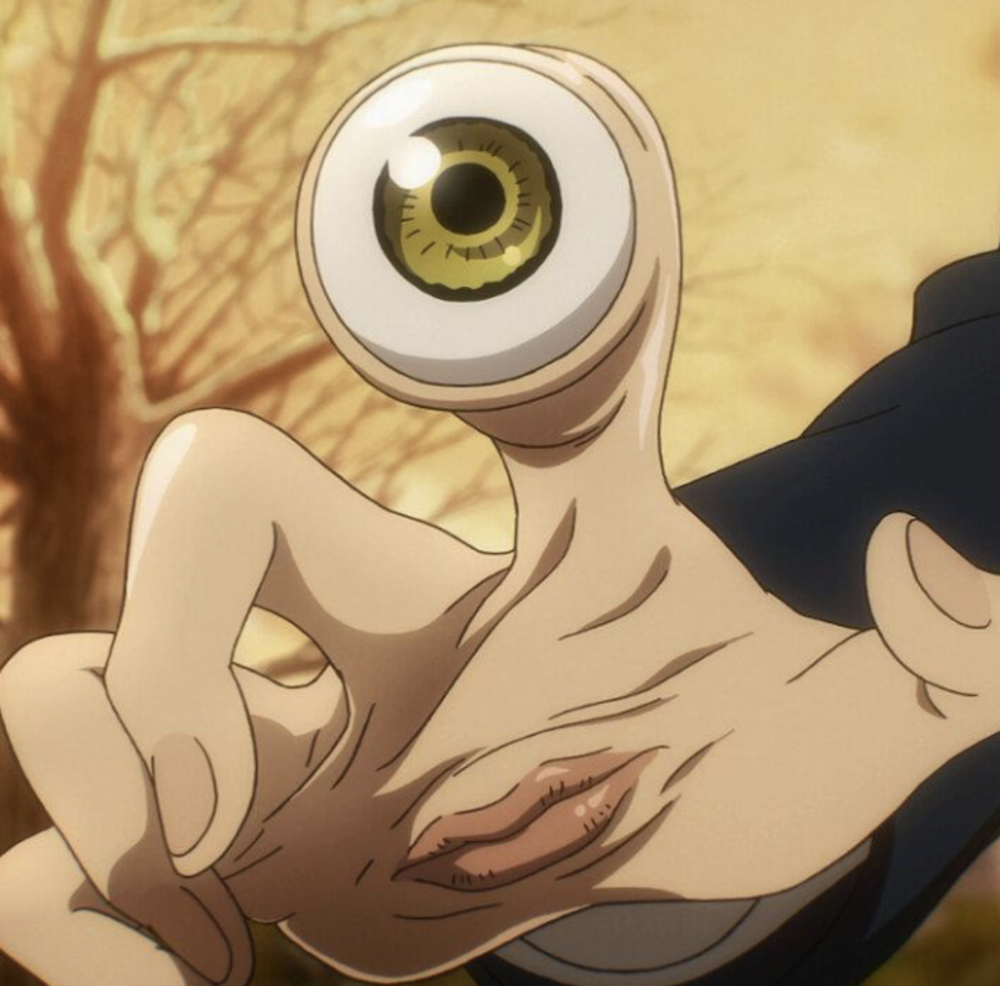
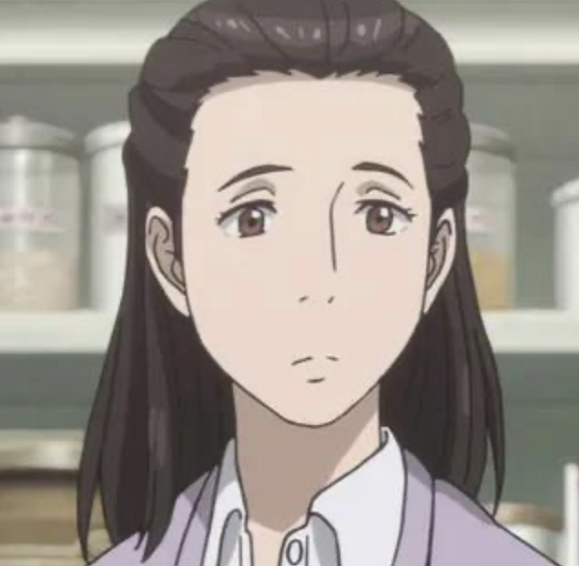
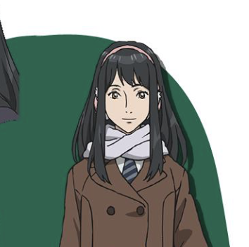
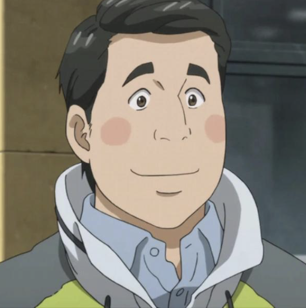
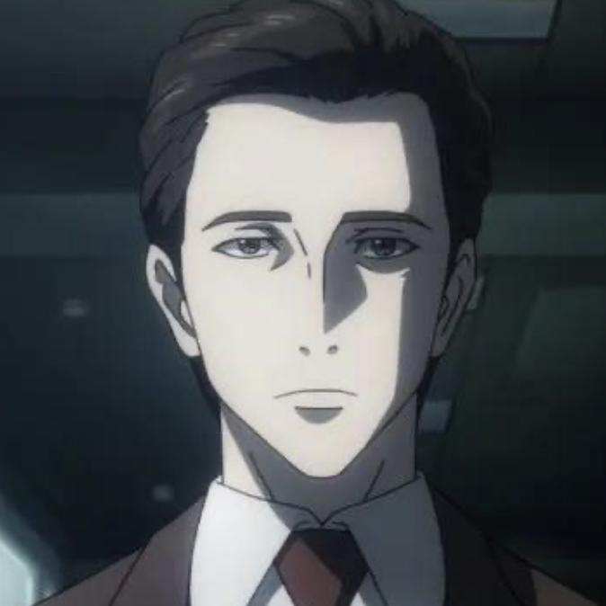
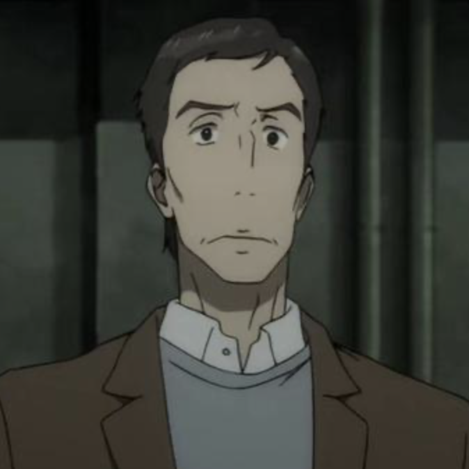

Shinichi Izumi
Voice Actor: Adam Gibbs
Role: Main protagonist
Description: A high school student who develops a partnership with Migi after a parasite takes over his right hand.

Migi
Voice Actor: Brittney Karbowski
Role: Shinichi's parasite companion
Description: An intelligent parasite living in Shinichi's right hand who helps him survive.

Satomi Murano
Voice Actor: Luci Christian
Role: Shinichi's love interest
Description: Shinichi's classmate and close friend who notices changes in his behavior.

Ryoko Tamiya
Voice Actor: Joanne Bonasso
Role: Intelligent parasite and major supporting character
Description: A calculating parasite who studies human behavior and questions the nature of her kind.

Kana Kimishima
Voice Actor: Maggie Flecknoe
Role: Shinichi's schoolmate
Description: A girl who feels a mysterious connection to Shinichi and can sense unusual parasite signals.

Mamoru Uda
Voice Actor: Mark Laskowski
Role: Human ally with a parasite
Description: A man whose parasite occupies part of his jaw and face, leading him to cooperate with Shinichi.
Hideo Shimada
Voice Actor: Blake Shepard
Role: Antagonistic parasite
Description: A parasite who infiltrates Shinichi's school by pretending to be a human student.

Takeshi Hirokawa
Voice Actor: John Gremillion
Role: Political leader connected to the parasites
Description: A human politician who supports a movement involving parasite-controlled society.

Shiro Kuramori
Voice Actor: Jay Hickman
Role: Private investigator
Description: An investigator hired to look into Shinichi and his unusual circumstances.